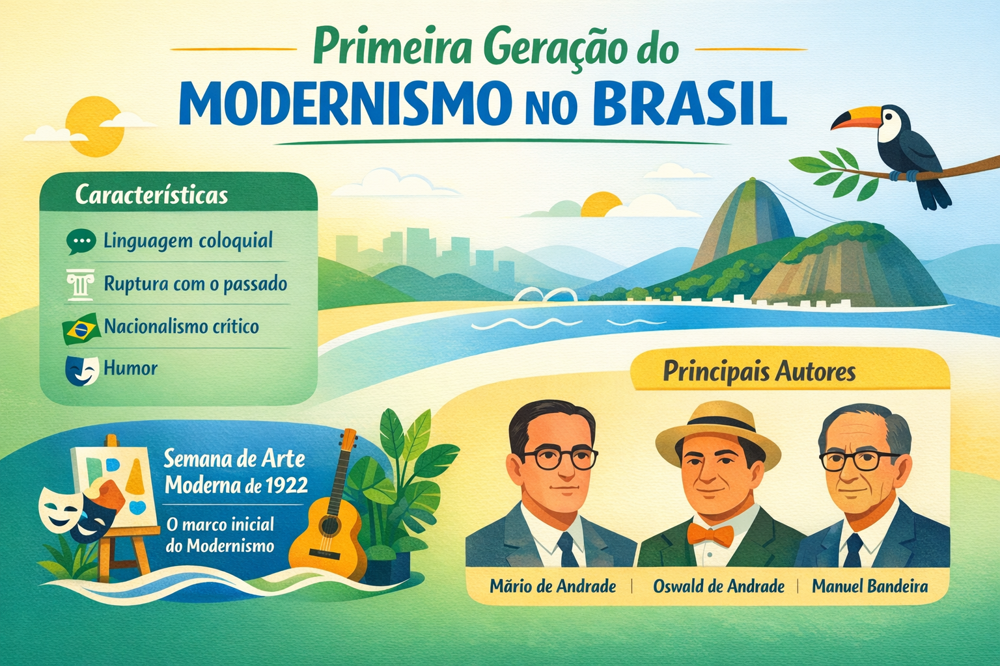

Primeira Geração do Modernismo no Brasil: contexto, características e principais autores
A Primeira Geração do Modernismo no Brasil, também conhecida como fase heroica do Modernismo, marcou uma profunda ruptura com os padrões tradicionais da literatura brasileira. Iniciada oficialmente em 1922, com a Semana de Arte Moderna, essa fase buscou renovar a linguagem artística e construir uma identidade cultural autenticamente brasileira.

Contexto histórico da Primeira Geração do Modernismo
O início do século XX foi um período de intensas transformações sociais, políticas e culturais no Brasil e no mundo. Influenciados pelas vanguardas europeias, como o futurismo e o cubismo, artistas brasileiros passaram a questionar os modelos acadêmicos e conservadores que dominavam a produção artística até então.
Nesse cenário, a Semana de Arte Moderna de 1922, realizada no Theatro Municipal de São Paulo, tornou-se o marco inicial do Modernismo no país. O evento reuniu artistas, escritores e músicos que propunham uma nova forma de pensar e fazer arte.
Principais características da Primeira Geração Modernista
- Ruptura com o passado: rejeição das normas clássicas e acadêmicas;
- Linguagem coloquial: uso de uma linguagem mais próxima da fala cotidiana;
- Nacionalismo crítico: valorização da cultura brasileira, sem idealizações;
- Experimentação estética: liberdade formal e inovação na estrutura dos textos;
- Humor e ironia: crítica social e cultural por meio da sátira;
- Valorização do cotidiano: temas simples e do dia a dia;
Principais autores e obras
Diversos escritores se destacaram nesse período, contribuindo para a consolidação do Modernismo no Brasil. Entre os principais nomes, destacam-se:
- Mário de Andrade: autor de Macunaíma, obra que representa a identidade brasileira de forma crítica e inovadora;
- Oswald de Andrade: criador do Manifesto Antropófago, que propunha “devorar” a cultura estrangeira e transformá-la em algo nacional;
- Manuel Bandeira: poeta que explorou temas cotidianos com linguagem simples e sensível;
- Anita Malfatti: artista plástica que ajudou a introduzir as ideias modernistas no Brasil;
A importância da Semana de Arte Moderna de 1922
A Semana de Arte Moderna foi fundamental para consolidar o movimento modernista no Brasil. Apesar de ter sido inicialmente criticada por setores conservadores da sociedade, o evento abriu espaço para novas formas de expressão artística e influenciou gerações posteriores.
Esse momento histórico representou o rompimento com a dependência cultural europeia e incentivou a criação de uma arte genuinamente brasileira.
Conclusão
A Primeira Geração do Modernismo no Brasil foi essencial para transformar a literatura e as artes no país. Ao romper com padrões tradicionais e valorizar a cultura nacional, os modernistas abriram caminho para novas formas de expressão e consolidaram uma identidade cultural própria.
Com sua ousadia e inovação, essa fase permanece como um marco fundamental na história da literatura brasileira.
Explore Outros Conteúdos
Continue seus estudos acessando outras seções do site Mestre Kira: